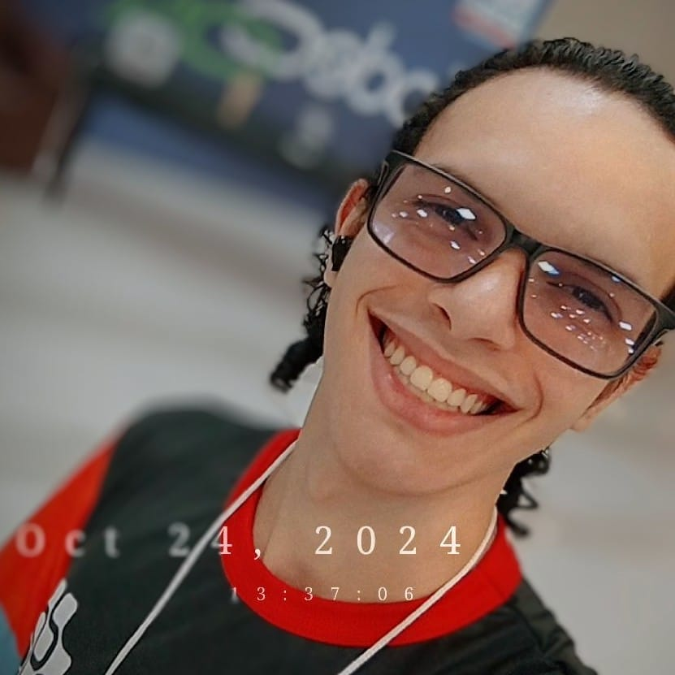

Eai! Eu sou Alluisio Silva!

Full Stack Developer que ama código, jogos, ficção científica e café (com muito leite em pó e 4 colheres de açúcar).
Sou estudante de Engenharia de Software na UNINTER. Tenho muitos cursos de formação na área de desenvolvimento, sou apaixonado por codar
O que eu gosto?
- Café (com muito leite em pó e 4 colheres de açúcar)
- Jogos RPGs densos e cheios de história (ou simuladores)
- Programar nas horas vagas
- Descobrir novos desafios
- Apreciar um bom whiskey
Principais conhecimentos tech
Jogos favoritos
- Assassin's Creed (em geral)
- F1 15 | 18 | 23 | 24
- Hogwarts Legacy
- Red Dead Redemption II
- Days Gone
- RUST
- Gold Mining Simulator